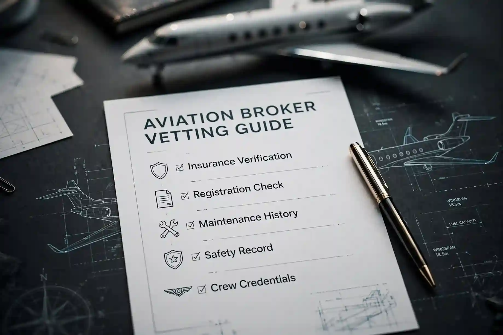

TL;DR: A midsize jet charter buys a taller cabin, more baggage room and about 2,000 to 2,500 nautical miles of range. The Learjet 45XR and Hawker 400XP are often quoted against midsize jets, but both have light-jet cabins. The 45XR sits at the top of the light class: eight seats and about 1,685 nm with every seat filled. The 400XP is a classic light jet: seven seats in charter use and about 1,180 nm with a full cabin. For sectors under about two and a half hours, either is usually the better value. Beyond that, or with more than five passengers and full baggage, a midsize jet such as the Citation XLS+ or Hawker 850XP is the safer choice.
What separates a light jet from a midsize jet?
Three things decide the class: cabin height, range with every seat filled, and baggage room. A light jet cabin is about 4 ft 9 in to 5 ft high, so passengers stoop to move about. A midsize cabin is close to stand-up height, usually 5 ft 8 in or more, with a larger baggage hold and enough range for a 4 to 5 hour sector.
The categories are not regulated. Operators and brokers use them loosely, which is why the same aircraft can appear as light in one quote and midsize in another. Our light jet charter guide and midsize jet charter guide list the aircraft we place in each class and why.
Price follows the class, but not strictly. An efficient midsize jet can cost less per hour than an older, faster light jet. The hourly rate is only one part of the bill, so compare full trip quotes, not rates.
Is the Learjet 45XR a light or a midsize jet?
The Learjet 45XR is a light jet with near-midsize performance. Sources disagree on its class: some guides call it super-light, others list it with midsize jets. We list it as a light jet because its cabin is just under 5 ft high, while its speed and range are close to the midsize class.
It typically seats eight. It cruises at up to about 465 knots and carries its passengers about 1,685 nm with every seat filled. With four passengers and light bags, it reaches roughly 1,900 to 2,000 nm. The baggage hold takes about 65 cubic feet, which is good for the class. It was built from 2003 to 2012, so any 45XR on offer today is between 14 and 23 years old. Ask for the year of manufacture and the date of the last interior refurbishment. Specifications are on our Learjet 45XR charter page.
Where does the Hawker 400XP fit?
The Hawker 400XP is a light jet, and charter guides agree on that. It seats seven in normal charter use, eight at most. It cruises at about 450 knots. With a full cabin, its practical range is about 1,180 nm; with four passengers, Hawker quotes about 1,465 nm. The cabin is about 4 ft 10 in high with a flat floor, which makes it feel larger than its size.
It was built from 2004 to 2010. An upgraded version, the 400XPR, has newer engines and more range, so it is worth asking which version an operator is offering. The 400XP is the lower-cost choice for short regional sectors. Specifications are on our Hawker 400XP charter page.
How do the 45XR and 400XP compare with true midsize jets?
The table compares the two with two midsize jets that are common on the charter market in Asia and the Gulf: the Citation XLS+ and the Hawker 850XP. Hourly rates are indicative, for Asia and the Middle East, before fees.
| Aircraft | Class | Typical seats | Cabin height | Range, light load | Indicative rate per hour |
|---|---|---|---|---|---|
| Hawker 400XP | Light | 7 | about 4 ft 10 in | about 1,465 nm | $3,500–5,500 |
| Learjet 45XR | Light, top of class | 8 | about 4 ft 11 in | about 1,900–2,000 nm | $4,500–6,500 |
| Citation XLS+ | Midsize | 9 | about 5 ft 8 in | about 2,100 nm | $3,800–6,000 |
| Hawker 850XP | Midsize | 8 | about 5 ft 9 in | about 2,540 nm | $4,000–6,500 |
Two points stand out. The Citation XLS+ often costs no more per hour than the 45XR, and it offers a taller cabin. The 45XR is faster, which helps on longer sectors. Citation XLS+ details and Hawker 850XP details are on their own pages.
Which Asia and Gulf routes suit each jet?
Range charts assume still air and standard reserves. Real routing, winter headwinds and a full cabin take 10 to 15 percent off. The table uses straight-line distances, so treat it as a planning guide; the operator confirms every sector.
| Route | Distance | Hawker 400XP | Learjet 45XR | Midsize (XLS+, 850XP) |
|---|---|---|---|---|
| Dubai – Riyadh | 465 nm | Nonstop | Nonstop | Nonstop |
| Karachi – Dubai | 650 nm | Nonstop | Nonstop | Nonstop |
| Singapore – Bangkok | 765 nm | Nonstop | Nonstop | Nonstop |
| Hong Kong – Bangkok | 910 nm | Nonstop | Nonstop | Nonstop |
| Islamabad – Dubai | 1,050 nm | Usually, check winds with a full cabin | Nonstop | Nonstop |
| Delhi – Dubai | 1,190 nm | Fuel stop likely with a full cabin | Nonstop | Nonstop |
| Hong Kong – Singapore | 1,385 nm | Light load only | Nonstop | Nonstop |
| Islamabad – Riyadh | 1,460 nm | Fuel stop | Light to medium load | Nonstop |
| Dubai – Istanbul | 1,640 nm | Fuel stop | Light load, check winds | Nonstop |
The pattern is simple. Under about 900 nm, all four aircraft do the job and the 400XP usually costs least. Between 1,000 and 1,400 nm, the 45XR earns its place. Beyond that, a midsize jet avoids a fuel stop that would cost 45 to 60 minutes.
What does a light or midsize jet charter cost?
Hourly rates in our region sit roughly between $3,500 and $6,500 for these four aircraft. Published US market indexes are higher, because they include taxes and fees in the hourly figure. A Dubai to Riyadh sector of about 1 hour 20 minutes in a Hawker 400XP comes to roughly $5,000 to $7,000 of flight time. In a Hawker 850XP, expect about $5,500 to $8,500.
Flight time is not the full price. Positioning flights, crew overnights, landing and handling fees, overflight permits and catering are added. A one-way trip can carry the cost of the aircraft flying home empty. Our guide on how much it costs to charter a private jet explains each line of a quote.
Are empty legs available on midsize jets?
Yes, and they are often the best value in this class. In our late November listings, Hawker 850XP empty legs appeared on Singapore to Bangkok, Hong Kong to Bangkok, Singapore to Bali and Dubai to Istanbul, and Citation XLS+ legs ran out of Istanbul and Antalya. Empty legs follow the aircraft, not the client, so dates and routes change daily. The current list is on our empty leg flights page.
How do you choose between them?
- Count passengers and bags. Five passengers with golf bags or winter luggage often rule out a light jet, whatever the range chart says.
- Find your longest sector. If it is over 1,400 nm, plan on a midsize jet or accept a fuel stop.
- Decide whether stand-up height matters. On a sector over three hours, most passengers notice the difference.
- Check the airfields. Short or high-altitude runways, and hot afternoons in the Gulf, reduce the load a jet can carry.
- Ask the year of manufacture, the last refurbishment and the operator’s safety audits before comparing prices.
Skylinks Asia is a charter broker. We do not own or fly aircraft. We collect quotes from vetted AOC holders and set light and midsize options side by side, so the trade-off between price, cabin and range is clear before you choose.
Related Reading

Private Jet Charter in Asia: The Complete 2026 Guide
Aircraft picks, top routes and permit lead times across Asia.
Read Article
How to Vet a Charter Broker
The red flags to check before you confirm a private jet charter.
Read ArticleEmpty Leg Flights Explained
How empty legs work, what they save, and their limits.
Read ArticleLight or midsize for your next trip?
Send us the route, dates and passenger count. Our charter desk compares light and midsize offers from vetted operators side by side.
Request a Jet Charter QuoteFrequently Asked Questions
The Learjet 45XR is usually classed as a light jet, at the top of that class. Its cabin is just under 5 ft high, which is light-jet size, but its speed of about 465 knots and range of about 1,685 nm with a full cabin are close to midsize performance. Some charter guides list it as midsize, so check the aircraft type on any quote.
A Hawker 400XP seats seven passengers in normal charter configuration, and up to eight in some cabins. With every seat filled, baggage room is limited, so share the bag count when asking for a quote.
About 1,685 nautical miles with every seat filled, and roughly 1,900 to 2,000 nm with four passengers and light bags. Headwinds, routing and reserves reduce this in practice. Islamabad to Dubai or Delhi to Dubai is well within range; Dubai to Istanbul needs a light load.
Usually, yes. The straight-line distance is about 1,050 nm, within the 400XP range with four passengers. With a full cabin, strong headwinds or full baggage, the operator may plan a fuel stop. The operator confirms each sector before the quote is final.
In Asia and the Middle East, midsize jets such as the Citation XLS+ and Hawker 850XP are indicatively quoted at about $3,800 to $6,500 per flight hour, before fees. Larger midsize jets cost more. Positioning, crew overnights, landing, handling and permits are added to the flight time.
A midsize jet has a taller cabin, usually close to stand-up height, more baggage space and about 2,000 to 2,500 nm of range. A light jet has a cabin of about 5 ft or less and suits sectors of up to about two and a half hours. The classes are not regulated, so compare cabin height, seats and range directly.
Common types include the Citation XLS+, Hawker 850XP, Learjet 75, Citation Latitude and Embraer Legacy 500. Availability varies by base and season. Gulf, Singapore and Hong Kong bases usually offer the widest choice.
Usually, yes. The 400XP is typically quoted about $1,000 per hour below the 45XR. On sectors under about 900 nm it is often the best-value jet. On longer sectors, the 45XR’s range avoids a fuel stop and can lower the total trip cost.
Yes. Hawker 850XP and Citation XLS+ empty legs appear regularly on routes such as Singapore to Bangkok, Hong Kong to Bangkok and flights out of Istanbul. Empty legs follow the aircraft, so dates and routes change daily and must be confirmed before booking.
Send us the route, dates, number of passengers and bags, and any timing limits. We collect offers from vetted AOC holders and return light and midsize options side by side, normally within a few hours.